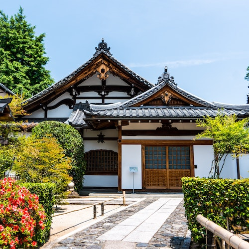
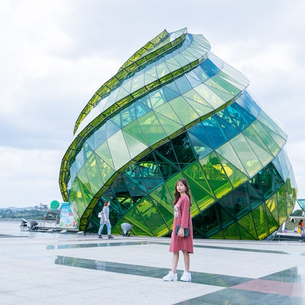

Thandi Khumalo
Thandi Khumalo is an architecture and portrait photographer drawn to unique buildings and interesting faces. From bold, unusual designs to the striking character of the people she meets, her work captures the stories and personality in every structure and every face.
John Smith
John Smith is a landscape and building photographer who enjoys exploring quiet places and capturing the natural light of each season. His calm, colourful images invite viewers to slow down and enjoy the beauty of the outdoors and the character of the buildings around them.
Sally Robins
Sally Robins is a nature photographer who loves finding beauty in the small details around her. From delicate flower petals to soft morning light, her gentle images bring a sense of warmth and wonder to every scene.
The Asian house It'll blow your mind
Beneath its sweeping, curved roof, this Asian house blends timeless craftsmanship with quiet elegance. Every carved detail and graceful line tells a story of tradition, balance, and beauty, inviting you to pause and take in a truly breathtaking sight. Captured beautifully by John Smith.

Grace in Every Detail A portrait in architecture
Framed by timeless architecture, this striking portrait brings together the elegance of the woman and the grace of the building behind her in perfect harmony. Every line and detail tells a quiet story of beauty, character, and calm. Captured beautifully by Thandi Khumalo.

Still Waters Nature’s quiet escape
A lone canoe rests on the calm river, surrounded by nothing but open water and untouched nature. In the stillness, every ripple and reflection invites you to slow down and breathe in the peace of the wild. Captured beautifully by Sally Robins.